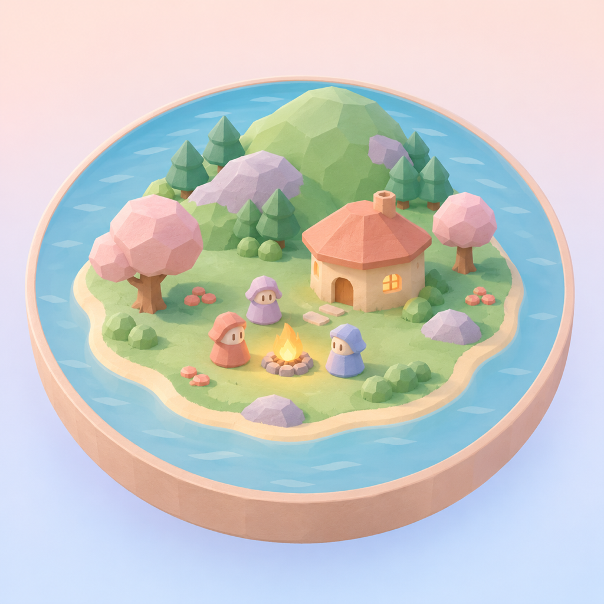

Firmament
Shape a little world. Watch the people in it find their way.

Leave room for a story
Plant trees, lay paths, build shelters, and change the sky. Bring rain or a storm. Welcome strangers, or see how the island responds to a flood, an earthquake, or sickness.
The villagers have needs and relationships of their own. The Chronicle gathers events into a record of island life, and Field Notes chart what changes over time.
Thoughts that stay on your device
On a compatible device with Apple Intelligence enabled and its model ready, villagers can think and speak using Apple’s on-device language model. Firmament does not send those thoughts to a cloud model.
The island also runs when the model is unavailable, with a message explaining why villagers cannot think yet.
Your island, between visits
Firmament keeps one island on your device. Its saved records include its Chronicle and Field Notes. Looking back through records does not rewind the living island.
For iPhone and iPad with iOS or iPadOS 27 or later.
Get help with Firmament